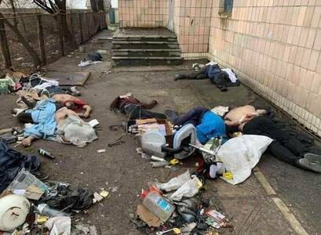
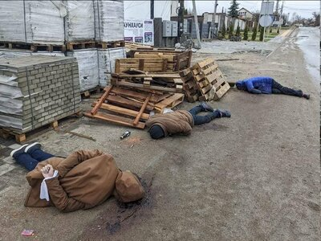
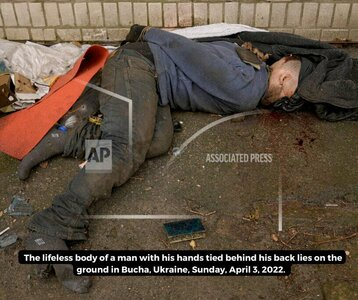
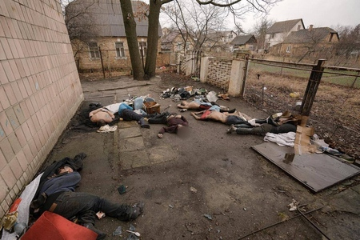
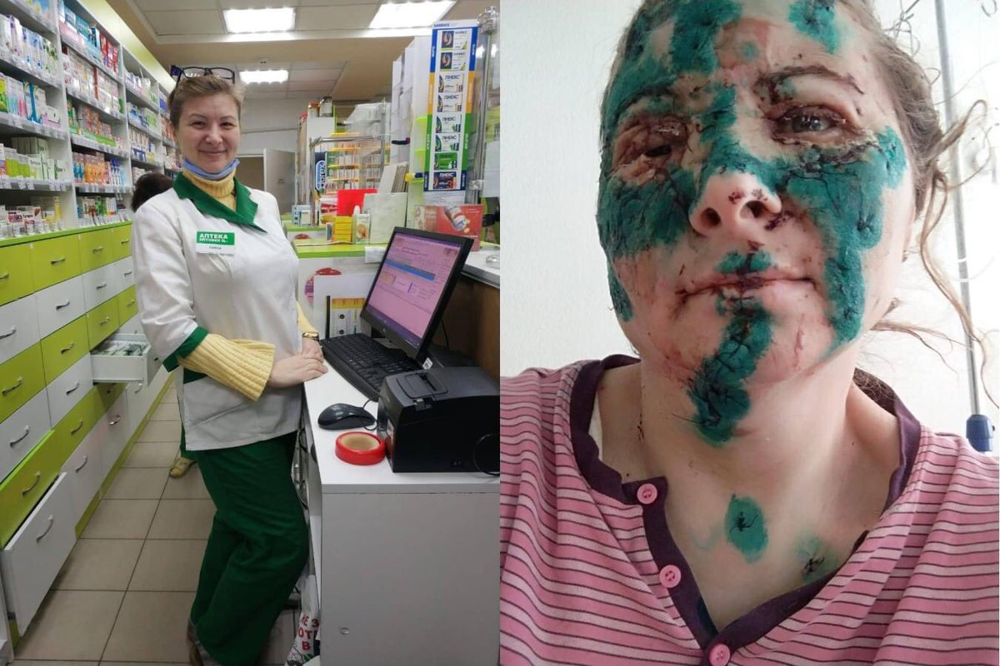

FAQ
Is Putin the sole responsible for this war?
- Independent poll showed that 58% of Russians support invasion of Ukraine and only 23% oppose.
- A survey by VTsIOM showed that Putin's rating jumped ten percent in the week ending March 11 to reach 77% as compared to 67% on the week ending February 14 (before the war). This is in line with the raise of Putin's support among Russians after the Crimea annexation in 2014.
- More than 300 rectors of Russian Universities backed Russia's invasion of Ukraine.
-
It was not Putin, who killed civilians in Bucha with hands tied behind their back.
    - Nina Zhuk is a professional pharmacist from Kharkiv. She agreed to show her face after the bombing attack on Kharkiv. It was not Putin, who opted to deliver bombs straight into the city center of Kharkiv. 
- "When you are a part of mass-murder machinery, it is not enough to look away!" From closing arguments of the prosecutor Lars Mahnke at the trial against Bruno Dey, who was found guilty over mass murder at Stutthof Camp despite he had not been involved in the killings.
Is this the first war between Ukrainians and Russians?
Somewhat later, the Ukrainian Insurgent Army was engaged in guerrilla warfare against the Soviet Union (and the Polish Underground State, Communist Poland, Nazi Germany) in 1942-1956 mainly on the West of current Ukraine.
If this page was useful for you, drop us a short message on helpuaresist {at} gmail.com.